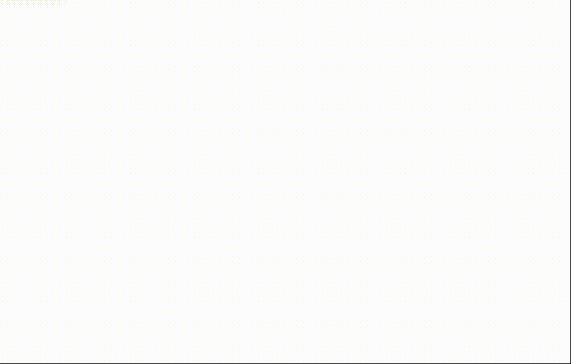

NewScribe user help
Animation and camera
Appearances, disappearances, vector and bitmap draw, composite fade, timing and camera.

9. Animation, timeline and camera#
Appearance modes#
NewScribe supports:
- Fade
- Move
- Zoom
- Spin
- Unfold
- Vector draw
- Bitmap draw
- Chart reveal
- Typewriter
Vector draw and bitmap draw#
Vector draw reads SVG paths and strokes and follows their real order. It looks like someone tracing the outline. It is best for icons, line art, diagrams and clean vector artwork.
Vector draw has a “stroke only” option. Without it, NewScribe draws the outline and then fills the filled areas, imitating a marker drawing that outlines and then colours. With it, NewScribe follows the paths only and does not add the fill pass. VideoScribe SVG assets often already contain simulated fill paths; enable “stroke only” for those to avoid double painting.
Bitmap draw reads pixels and creates a scribble or scan path. It works with PNG and JPG and with SVGs that cannot be parsed as clean paths. It looks more like painting the  image onto the board.
image onto the board.
In short: vector draw traces lines; bitmap draw paints pixels.
Composite fade#
Every appearance mode except Fade itself can also enable “fade in too”. This combines transparency with movement, zoom, spin or unfold.
Composite fade is useful for soft entrances. It can also make an entrance feel less crisp; use it deliberately.
Appearance and disappearance are separate#
An entrance controls how an element enters. A disappearance controls how it leaves. They are separate settings, not one animation played backwards.
An element can appear without ever disappearing, or it can disappear later after a hold. The appearance and disappearance durations and modes are controlled independently.
Disappearance is best for an element that appears briefly and then leaves quickly: a flash of information, a temporary highlight, a wrong answer or a decorative icon. It is not a good way to erase content that has been on screen for a long time. A long hold followed by a fade leaves the old content visible for too long and makes the pacing feel slow.
To erase something that has been shown for a while and reveal the background underneath, use a  mask. A mask controls a covered region, not the whole element’s opacity. It is closer to wiping old content off a whiteboard; it can target one element or all previous elements.
mask. A mask controls a covered region, not the whole element’s opacity. It is closer to wiping old content off a whiteboard; it can target one element or all previous elements.
Hold, switch and disappearance#
Each element has an appearance duration, a hold duration and a switch duration. If disappearance is enabled, it also has a disappearance duration and mode.
On the timeline:
appear → hold → switch → next elementIf an element has a disappearance, it happens after its own hold and before the switch. Check both the hold and the disappearance so the next element does not start while the previous one is still leaving.
Camera#
Each element can pin its  camera:
camera:
- centre point
- zoom
Pinning a camera can also be understood as fixing the view: the shot always looks at that position and scale. Without pinning, the camera moves smoothly from the previous element.
For stable charts, diagrams and  text, pin the camera. For a continuous tour, let the camera move.
text, pin the camera. For a continuous tour, let the camera move.
Timeline#
Use the timeline to arrange order first. Set approximate appearance and hold times for all elements, preview, and then refine the problem sections. Do not spend a long time micro-adjusting before the order is stable.